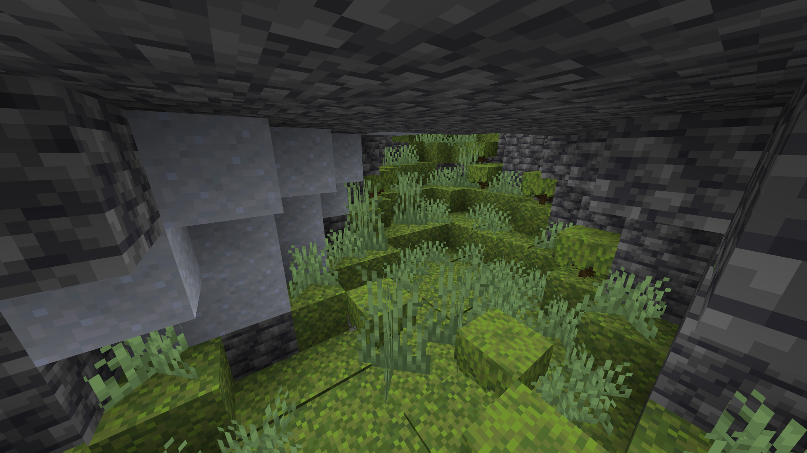

Vegetation patch feature¶
The vegetation_patch and waterlogged_vegetation_patch features can be used to randomly spread vegetation in the world.
Configuration¶
The vegetation patch feature has the following configuration options:
| Option | Type | Description |
|---|---|---|
replaceable |
A block tag (Starting with # in Json). |
The blocks that can be replaced by the vegetation. |
ground_state |
A BlockStateProvider |
The block state of the vegetation. |
vegetation_feature |
A PlacedFeature (or id in Json). |
The vegetation to place. |
surface |
Enum constants of CaveSurface (ceiling or floor). |
The surface to place the vegetation on. |
depth |
An IntProvider (Range limit in Json is \([0;128]\)). |
The search depth. |
extra_bottom_block_chance |
A float (Range limit in Json is \([0.0;1.0]\)). |
The chance that an extra block is placed at the bottom of the vegetation. |
vertical_range |
An int (Range limit in Json is \([1;256]\)). |
The vertical range of the vegetation. |
vegetation_chance |
A float (Range limit in Json is \([0.0;1.0]\)). |
The chance that the vegetation is placed. |
xz_radius |
An IntProvider (Range limit in Json is \([0;128]\)). |
The horizontal radius of the vegetation. |
extra_edge_column_chance |
A float (Range limit in Json is \([0.0;1.0]\)). |
The chance that an extra column is placed at the edge of the vegetation. |
In code, the VegetationPatchConfiguration class is used to configure the feature.
Example¶
As an example, here's the configured- and placed feature for placing moss in caves.
ConfiguredFeatures.kt
@OptIn(ExperimentalWorldGen::class)
@Init(stage = InitStage.POST_PACK_PRE_WORLD)
object ConfiguredFeatures : FeatureRegistry by ExampleAddon.registry {
val MOSS_PATCH = registerConfiguredFeature(
"moss_patch",
Feature.VEGETATION_PATCH,
VegetationPatchConfiguration(
BlockTags.MOSS_REPLACEABLE, // replaceable
BlockStateProvider.simple(Blocks.MOSS_BLOCK), // ground_state
PlacementUtils.inlinePlaced(VanillaRegistryAccess.getHolder(CaveFeatures.MOSS_VEGETATION)), // vegetation_feature (1)
CaveSurface.FLOOR, // surface
ConstantInt.of(1), // depth
0.0F, // extra_bottom_block_chance
5, // vertical_range
0.8F, // vegetation_chance
UniformInt.of(4, 7), // xz_radius
0.3F // extra_edge_column_chance
)
)
}
- Check out inlined placed features for more information.
PlacedFeatures.kt
@OptIn(ExperimentalWorldGen::class)
@Init(stage = InitStage.POST_PACK_PRE_WORLD)
object PlacedFeatures : FeatureRegistry by ExampleAddon.registry {
val MOSS_PATCH = placedFeature("lush_caves_vegetation", ConfiguredFeatures.MOSS_PATCH)
.count(125) // (1)!
.inSquareSpread() // (2)!
.inYWorldBounds() // (3)!
.environmentScan( // (4)!
Direction.DOWN,
BlockPredicate.solid(),
BlockPredicate.ONLY_IN_AIR_PREDICATE,
12
)
.randomVerticalOffset(1) // (5)!
.biomeFilter() // (6)!
.register()
}
- 125 attempts per chunk.
- Spread the vegetation in horizontally.
- Set the y-level to a random int up to 256. The static constant is equivalent to
- Search for the first solid block below the current position for 12 blocks.
- Add a y-offset of 1 block.
- Only place the vegetation in lush caves.
configured_feature/moss_patch.json
{
"type": "minecraft:vegetation_patch",
"config": {
"depth": 1,
"extra_bottom_block_chance": 0.0,
"extra_edge_column_chance": 0.3,
"ground_state": {
"type": "minecraft:simple_state_provider",
"state": {
"Name": "minecraft:moss_block"
}
},
"replaceable": "#minecraft:moss_replaceable",
"surface": "floor",
"vegetation_chance": 0.8,
"vegetation_feature": {
"feature": "minecraft:moss_vegetation",
"placement": []
},
"vertical_range": 5,
"xz_radius": {
"type": "minecraft:uniform",
"value": {
"max_inclusive": 7,
"min_inclusive": 4
}
}
}
}
placed_feature/lush_caves_vegetation.json
{
"feature": "minecraft:moss_patch",
"placement": [
{
"type": "minecraft:count", // (1)!
"count": 125
},
{
"type": "minecraft:in_square" // (2)!
},
{
"type": "minecraft:height_range", // (3)!
"height": {
"type": "minecraft:uniform",
"max_inclusive": {
"absolute": 256
},
"min_inclusive": {
"above_bottom": 0
}
}
},
{
"type": "minecraft:environment_scan", // (4)!
"allowed_search_condition": {
"type": "minecraft:matching_blocks",
"blocks": "minecraft:air"
},
"direction_of_search": "down",
"max_steps": 12,
"target_condition": {
"type": "minecraft:solid"
}
},
{
"type": "minecraft:random_offset", // (5)!
"xz_spread": 0,
"y_spread": 1
},
{
"type": "minecraft:biome" // (6)!
}
]
}
- 125 attempts per chunk.
- Spread the vegetation in horizontally.
- Set the y-level to a random int up to 256. The static constant is equivalent to
- Search for the first solid block below the current position for 12 blocks.
- Add a y-offset of 1 block.
- Only place the vegetation in lush caves.
Result¶
